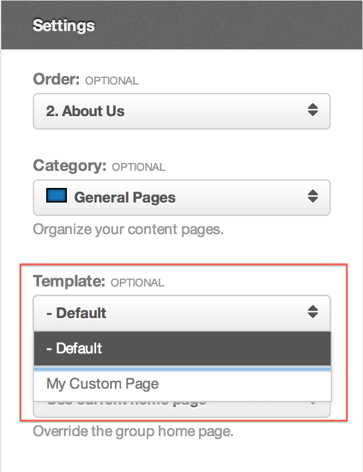

Developers
Page templates
Most of a super group's pages render through the same template file. When one
page, or a family of pages, needs a different layout, put a second file in the
group's template/ directory and the renderer picks it up.
The Coastal Resilience Center has one page like that. Its field-site pages —
one per instrumented site, a dozen of them and growing — need the map to run
the full width, with no sidebar. Every other page is fine in index.php. That
is exactly what page templates are for: a layout variation for some pages,
not a second design.
The mechanism is the candidate list in
Components\Groups\Helpers\Template::_fetch(),
described in Templating system.
This chapter is about the four ways a page can claim a file of its own.
Where the files go
app/site/groups/<gidNumber>/template/
All of them sit directly in template/, beside index.php. Subdirectories
are not searched.
Put them there on the server, or through the group's
repository. The group's file browser
reaches only uploads, for every group, so there is no way to upload a
template file from the site.
The four ways
| File | Applies to |
|---|---|
<name>.php with a Template Name header |
Any page whose Template setting names it |
page-<alias>.php |
The one page with that alias |
page-<id>.php |
The one page with that numeric id |
page.php |
Every group page that has not claimed one of the above |
They are tried in that order, then default.php, then index.php. The first
file that exists wins.
Which to use is a question of how many pages share the layout:
- One page, once.
page-<alias>.php. Nothing to configure. - Several pages, and the list will grow. A named template. The centre's dozen field sites all point at one file, and adding the thirteenth is a drop-down on the page form, not a deploy.
- Every page except the plugin tabs.
page.php.
page.php is worth calling out: it applies to group pages only. A plugin
tab — Wiki, Calendar, Forum — has no active page, so it renders through
default.php or index.php no matter what page.php contains. A template
put in page.php and expected to frame the whole group is the commonest
mistake here, and it shows up as the wiki looking wrong while the pages look
right.
A template named after the page
The Field Sites index, alias field-sites and id 6, uses
page-field-sites.php if that file exists, otherwise page-6.php. Nothing
else is needed; the page does not have to be edited.
Prefer the alias. The id is assigned by the database and means nothing to anyone reading the directory later.
A named template several pages can share
A file becomes a named template by declaring a name in a comment near the top:
<?php // app/site/groups/1051/template/fieldsite.php
/*
Template Name: Field site
*/
Components\Groups\Helpers\View::getPageTemplates()
reads every .php file in template/ and matches Template Name: up to the
end of the line, case-insensitively. Anything after the colon is the label.
The file may be called whatever you like — the label is what the interface
shows, and the filename is what gets stored on the page.
Two files never appear in the list, whatever they declare: index.php and
default.php.
Choosing one
The Template control is on the page's own edit form, in the Settings section, below Comments:
- On the group, choose Group Manager → Manage Group Pages.
- Select Manage Page on the page you want, or New Page.
- Under Settings, set Template.
- Select Save Page.
The list holds - Default plus one entry per named template. Leaving it on
- Default falls back to the page-* / page.php / index.php chain
above.

The control only exists on a super group's pages, and on the site form only when the template directory holds at least one named template. The administrator's page form at Users → Groups shows it for every super group, empty list or not. So the first named template you add is the one that makes the control appear at all — until then a manager sees no Template setting and reasonably concludes the feature is missing.
What the file receives
A page template is loaded exactly as index.php is, so it sees the same four
properties — $this->group, $this->page, $this->tab and
$this->content — and may use every
<group:include> tag. Most page
templates are a copy of index.php with one part swapped out, so it is
usually worth moving the shared header and footer into template/includes/
and including them from both. The centre does that on the day it adds the
second template, not the fourth: two copies of a header drift within a month.
Include tags inside a page's content
The tags a template may use are not the tags a page may use. Content
written in the page editor is rendered by a plain
Components\Groups\Helpers\Document,
whose allowed list is only:
<group:include type="modules" position="{position}" /><group:include type="module" title="{title}" /><group:include type="script" base="" source="{path}" /><group:include type="stylesheet" base="" source="{path}" />
content, menu, toolbar and googleanalytics are template-only; used in
page content they render as an HTML comment saying the include is not allowed
there. That comment is the whole error message — the page renders, the region
is blank, and nothing is logged. base works as it does in a template:
template resolves under template/assets/js or template/assets/css,
anything else is a path segment under the group directory, and an omitted
base looks in uploads.
Overriding the wrapper
Whatever renders the page body, com_groups wraps it in its own view. A super
group can replace that wrapper by dropping a file of the same name into
template/pages/; that directory is searched before the component's own.
The wrapper is
site/views/pages/tmpl/_view.php.
It emits <div class="group-page page-<alias>"> around the content and, below
it, the byline and the comment thread. Overriding it is the way to change
those without touching core.
Rewritten and checked against 2.4-main @ 91d03d0a23 on 2026-09-10.